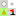

Xubuntu comes with a collection of preinstalled applications curated by the Xubuntu team which are accessible from the  (
( Ctrl+Escape) as well as the Application Finder (
Ctrl+Escape) as well as the Application Finder ( Alt+F3 or
Alt+F3 or  Super+R).
Super+R).
Por defeito, o Xubuntu apresenta as aplicações mais utilizadas habitualmente na categoria Favoritos do  .Estas aplicações incluem o gestor de software, o processador de texto e a documentação de ajuda, bem como o navegador web predefinido e o gestor de ficheiros. Para adicionar ou remover entradas à categoria de Favoritos clique com o botão direito do rato sobre uma aplicação e selecione a opçãoAdicionar aos Favoritos ou Remover dos Favoritos no menu de contexto.
.Estas aplicações incluem o gestor de software, o processador de texto e a documentação de ajuda, bem como o navegador web predefinido e o gestor de ficheiros. Para adicionar ou remover entradas à categoria de Favoritos clique com o botão direito do rato sobre uma aplicação e selecione a opçãoAdicionar aos Favoritos ou Remover dos Favoritos no menu de contexto.
![[Nota]](../../libs-common/images/note.png)
|
|
|
Para alterar o navegador web por defeito, o leitor de correio eletrónico, o gestor de ficheiros, o emulador de terminal entre outros, aceda à aplicação Aplicações predefinidas. |
O Catfish é um utilitário de pesquisa de ficheiros capaz de localizar ficheiros por nome, conteúdo, entre outros. Fornece capacidades de pesquisa externa ao gestor de ficheirosThunar.
Ligações: Página Web, Documentação, Doar
Alternativas: Pesquisa do MATE( mate-utils
mate-utils
|
|
|
|
Os resultados da pesquisa podem ser melhorados através da instalação do serviço de registo de atividade do utilizador |
O Engrampa é um gestor de ficheiros que fornece a capacidade de criar, consultar, modificar e extrair dados de ficheiros comprimidos, tais como ficheiros .zip e .gz.
Alternativas: File Roller ( file-roller
file-roller xarchiver
xarchiver
|
|
|
|
Para abrir um ficheiro RAR, é necessário o pacote |
A Calculadora do MATE está desenhada para se assemelhar a uma calculadora manual e possui os modos básico, avançado, financeiro e de programação.
Alternativas: Galculator ( galculator
galculator gnome-calculator
gnome-calculator speedcrunch
speedcrunch
O Mousepad é um editor de texto simples com funcionalidades para apresentar números de linha e espaços em branco, quebras de linha, realce de sintaxe de código-fonte, etc.
Ligações: Página Web, Documentação
Alternativas: Pluma ( pluma
pluma gedit
gedit geany
geany
O Screenshot é um utilitário de captura de ecrã que lhe permite efetuar capturas de ecrã completo, da janela de uma aplicação ativa ou de uma região do ecrã.
Ligações: Página Web, Documentação
|
|
|
|
Os três modos de captura podem ser ativados com a tecla |
O Mines é um jogo de puzzle para um jogador onde se localizam minas a flutuar num oceano com a ajuda de pistas sobre o número de minas vizinhas na área. Clicar num quadrado revela o que está por baixo dele: oceano vazio ou uma mina. Caso clique numa mina, o jogo termina.
O 
Ligações: Página Web, Doar
O Sudoku é um jogo de puzzle japonês baseado em lógica.O objetivo é preencher uma grelha 9×9 com os números de 1 a 9 de modo a que cada coluna, linha e cada uma das sub-grelhas 3×3 contenham todos os dígitos de 1a 9. Cada jogo começa com uma grelha parcialmente preenchida, e muitos jogos têm apenas uma única solução.
O Digitalizador de Documentos, também conhecido por Digitalização Simples, é um utilitário para digitalizar texto ou imagens/fotografias e guarda-los numa imagem ou ficheiro PDF.
O GIMP (Programa de Manipulação de Imagens do GNU) é uma aplicação de edição de imagens para melhorar e retocar fotografias, para o desenho livre e para a conversão entre formatos de imagem.
Ligações: Página Web, Documentação, Doar
Alternativas: Krita ( krita
krita mypaint
mypaint
O Ristretto é um visualizador de imagens com funcionalidades básicas de edição, funcionalidades de apresentação de diapositivos e a capacidade de definir uma imagem como fundo do ambiente de trabalho.
Ligações: Página Web, Documentação
Alternativas: Eye of MATE ( eom
eom gthumb
gthumb gpicview
gpicview nomacs
nomacs
O Firefox é um navegador web maduro e estável capaz de ser estendido com uma grande variedade de módulos complementares.
Ligações: Página Web, Documentação, Doar
Alternativas: Chromium ( chromium-browser
chromium-browser
O Pidgin é um cliente de mensagens instantâneas multiplataforma capaz de se ligar ao XMPP, Google Talk, IRC, ICQ entre outros.
Ligações: Página Web, Documentação, Doar
Alternativas: Telegram ( telegram-desktop
telegram-desktop empathy
empathy
O Thunderbird é um cliente de correio eletrónico versátil capaz de gerir várias contas de correio eletrónico e diferentes identidades em simultâneo. Tal como o Firefox, também pode ser melhorado com módulos complementares de forma a aumentar as suas funcionalidades.
Ligações: Página Web, Documentação, Doar
Alternativas: Geary ( geary
geary claws-mail
claws-mail evolution
evolution sylpheed
sylpheed
O Transmission é um cliente BitTorrent simples para transferir e partilhar ficheiros e que também possui uma interface web.
Alternativas: qBittorrent ( qbittorrent
qbittorrent deluge
deluge
O Parole é um leitor de multimédia simples capaz de reproduzir ficheiros de vídeo e de áudio.
Ligações: Página Web, Documentação, Doar
Alternativas: VLC ( vlc
vlc smplayer
smplayer celluloid
celluloid
|
|
|
|
Para reproduzir alguns formatos de multimédia proprietários, tal como o MP3, é necessário o |
O Xfburn é um programa para criar CDs de áudio e gravar ficheiros ISO em CDs e DVDs.
O Atril é um leitor de documentos capaz de abrir ficheiros de documentos com várias páginas, tal como PDF, XPS, ePUB e banda desenhada.
Alternativas: Evince ( evince
evince okular
okular zathura
zathura
O LibreOfficeé um conjunto de escritório que possui um processador de texto(Writer), folhas de cálculo (Calc), apresentações (Impress), diagramas (Draw), fórmulas matemáticas (Math) e bases de dados. É uma continuação do Open Office.
Alternativas: Microsoft Office, WPS Office, Free Office, OnlyOffice, GOffice (Abiword, Gnumeric)
As aplicações listadas nesta categoria também são apresentadas e organizadas no Gestor de definições e incluem aplicações para ajustar as preferências de hardware, gerir software, alterar a aparência da interface gráfica e configurar as definições de início de sessão.
Gestor de definições e incluem aplicações para ajustar as preferências de hardware, gerir software, alterar a aparência da interface gráfica e configurar as definições de início de sessão.
O Gigolo é uma forma simples de ligação a sistemas de ficheiros remotos, tais como ligações FTP ou SFTP (SSH) e SBM (partilhas de janelas).
O GParted é um gestor de partições que lhe permite criar, redimensionar, formatar e eliminar partições.
Alternativas: Discos do GNOME ( gnome-disk-utility
gnome-disk-utility partitionmanager
partitionmanager
|
|
|
|
O GParted só se encontra presente no instalador live, mas também pode ser instalado após a instalação ( |
O Gestor de tarefas fornece uma visão gráfica das aplicações em execução e apresenta a percentagem de CPU e memória RAM que se encontra a ser utilizada.
Alternativas: Monitor do Sistema do GNOME( gnome-system-monitor
gnome-system-monitor mate-system-monitor
mate-system-monitor lxtask
lxtask
O Thunar é um gestor de ficheiros que lhe permite navegar pelo sistema de ficheiros.
Alternativas: Caja ( caja
caja nemo
nemo pcmanfm
pcmanfm nautilus
nautilus
 |
 |
|
| Capítulo 3. Introdução |

|
Capítulo 5. Gestão de software |